2026-05-12
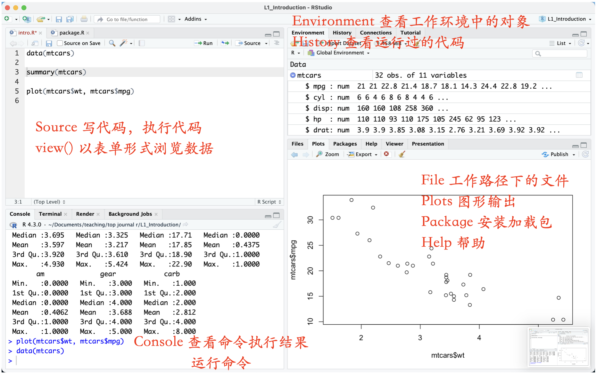
Ctrl + EnterCommand + Enter注意
直接按下 Enter 键只会将光标移至下一行，而不会运行当前命令。
注释是代码中不被执行的部分，用于解释代码逻辑。
# 开头的行。快速注释掉一段代码使其不执行
Ctrl + Shift + CCommand + Shift + C增加可读性和大纲目录，方便跳转到某段代码。
Ctrl + Shift + RCommand + Shift + R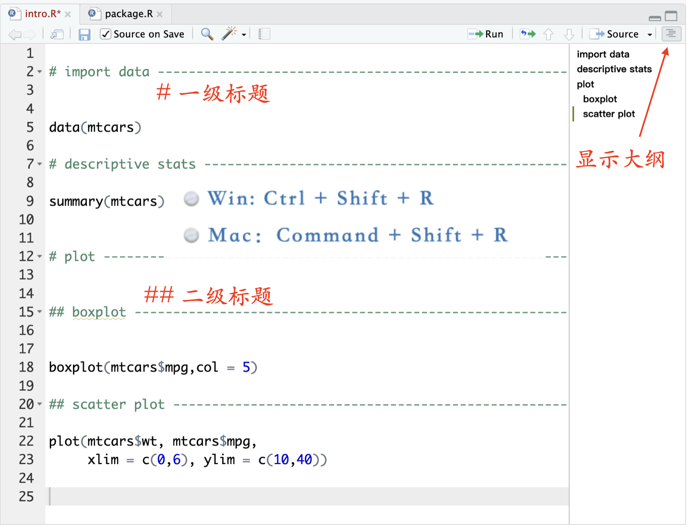
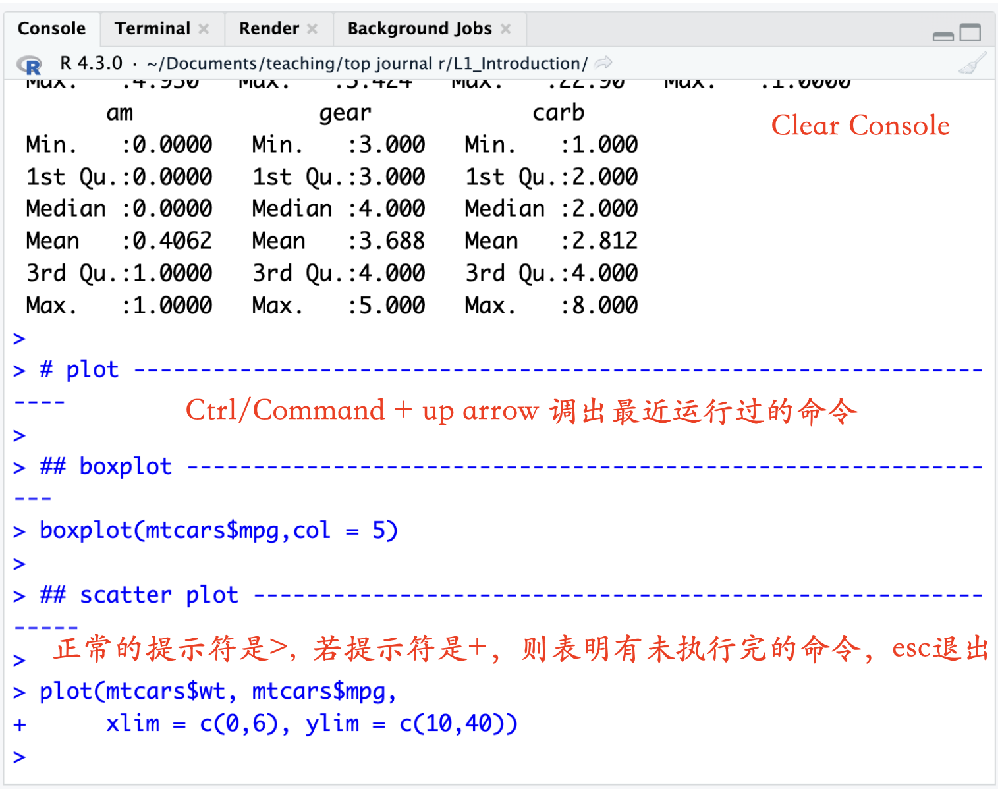
注意
在控制台直接修改代码无法保存至脚本文件。
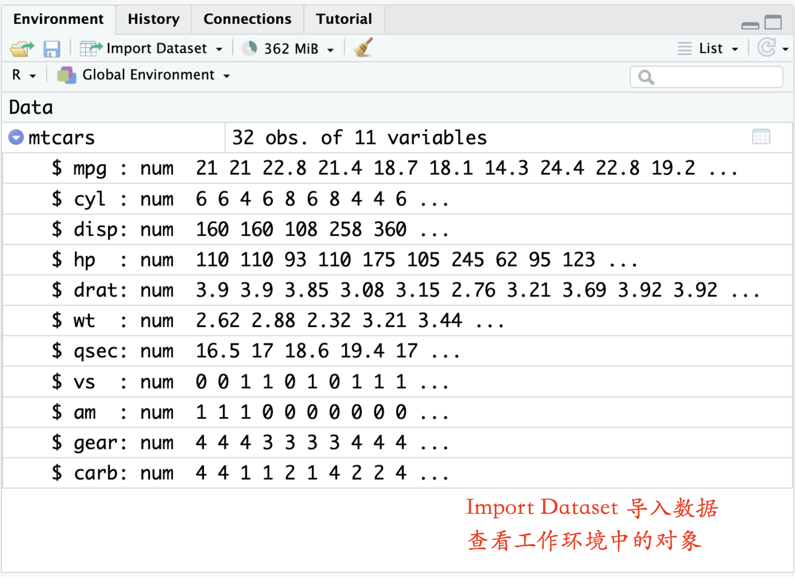
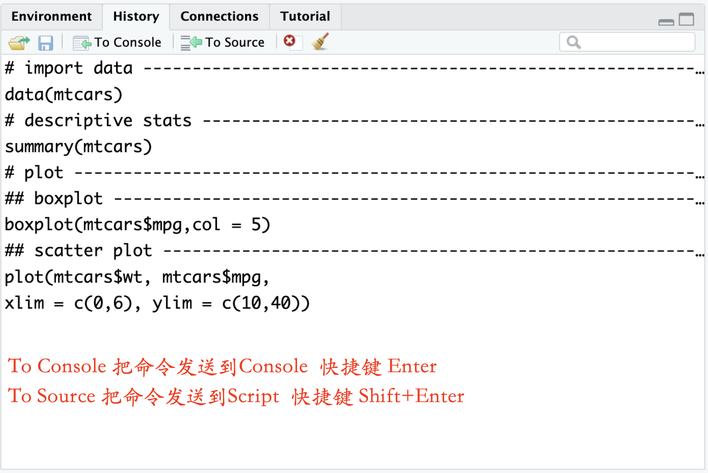
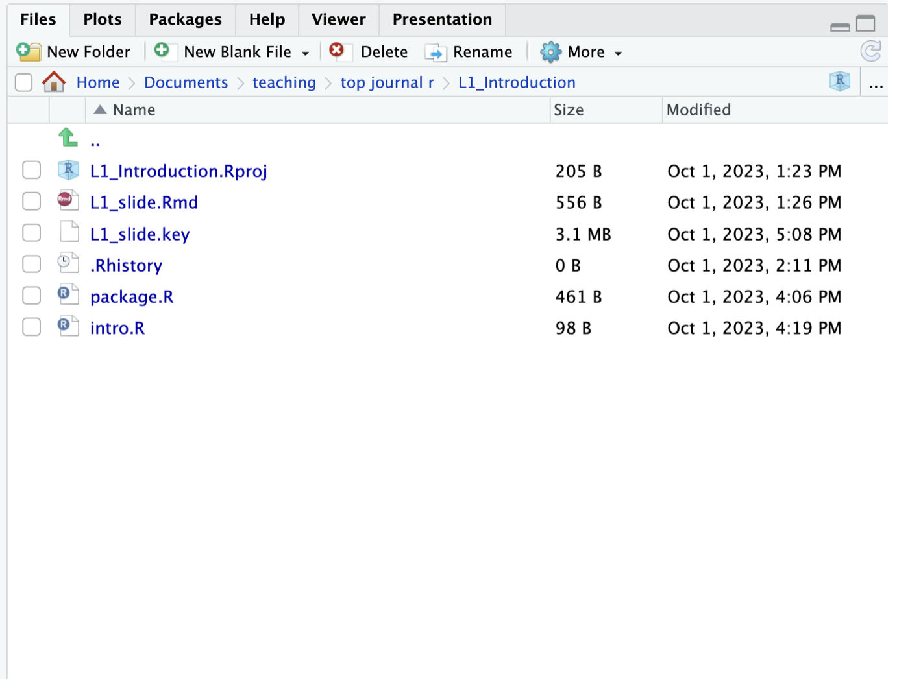
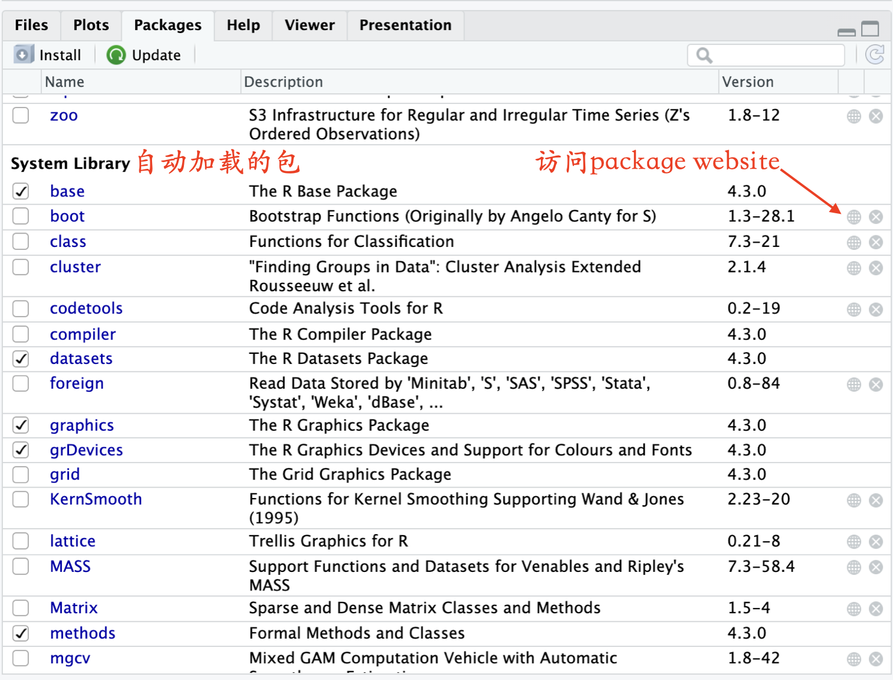
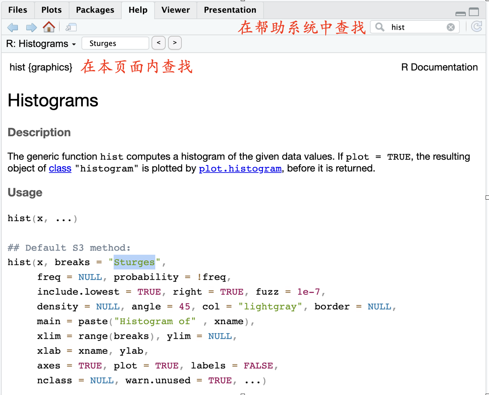
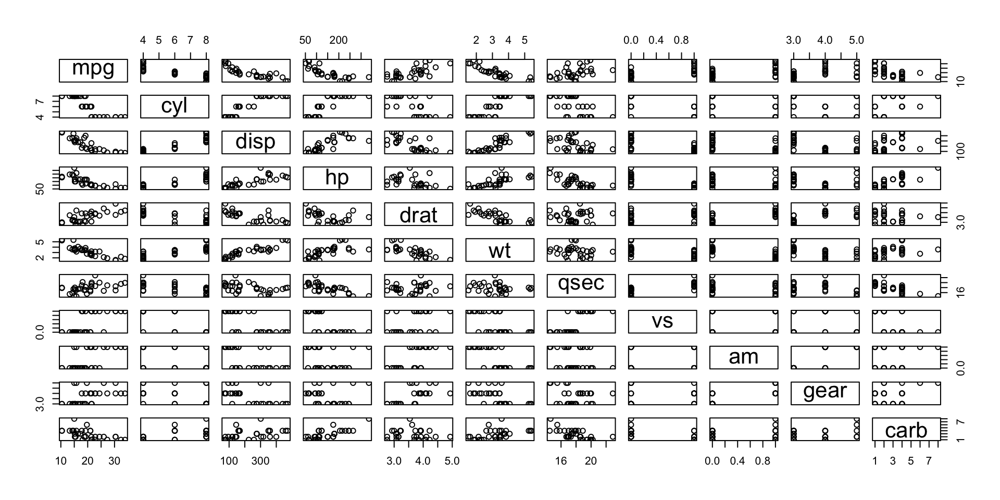
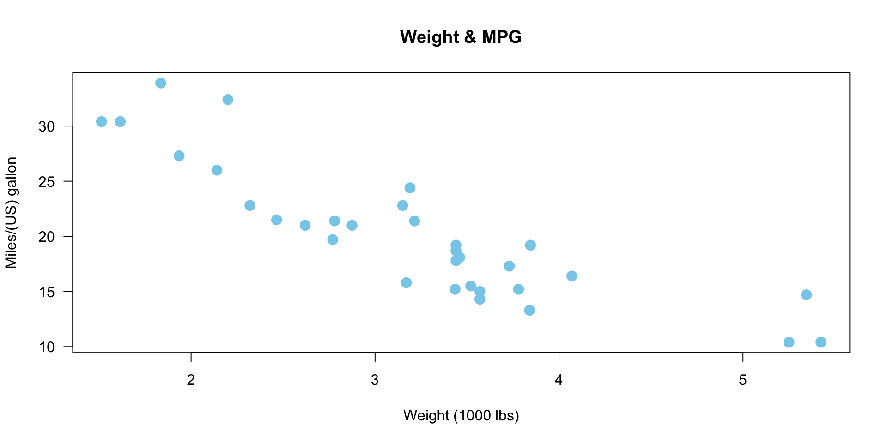
plot(as.factor(mtcars$cyl), mtcars$mpg, # 转换为因子，绘制箱线图
col = c("#8DA0CB", "#FC8D62", "#66C2A5"), # 分组填充颜色
border = "gray40", # 边框深灰色
las = 1, # 刻度数字水平显示
main = "MPG Distribution by Engine Cylinders", # 标题内容
xlab = "Number of Cylinders", # X轴标签
ylab = "Miles/(US) gallon", # Y轴标签
font.main = 2 # 标题粗体
)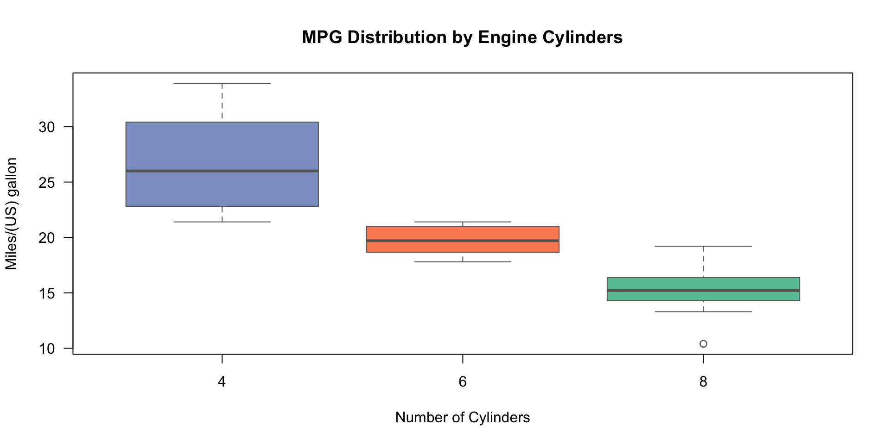
查看颜色代码：https://htmlcolorcodes.com/
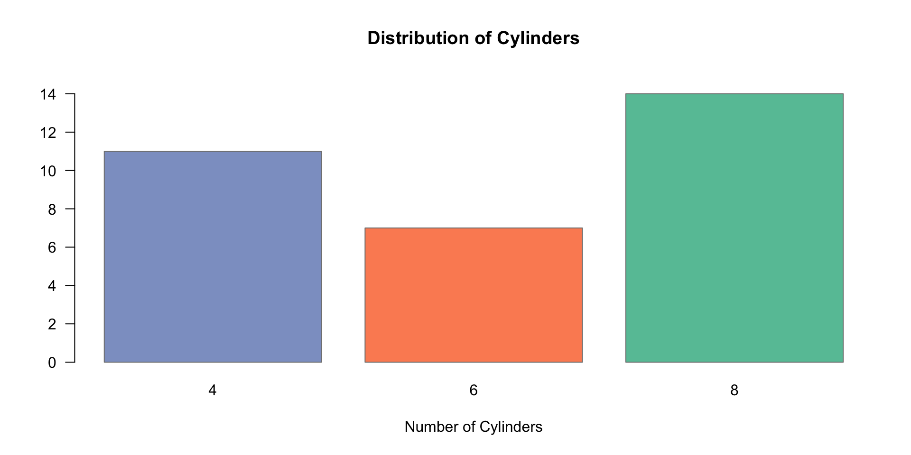
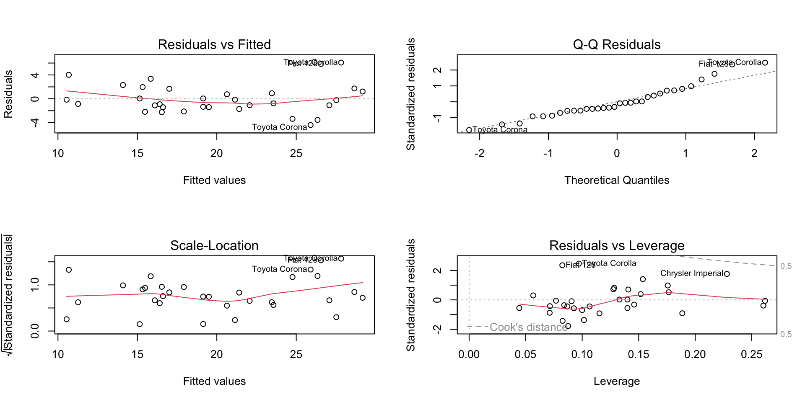
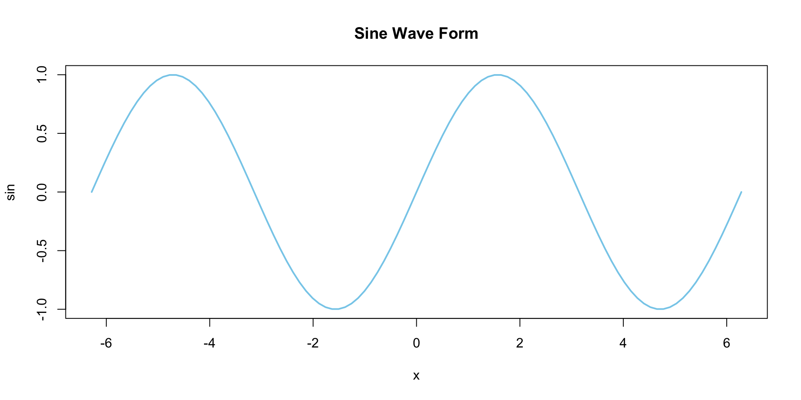
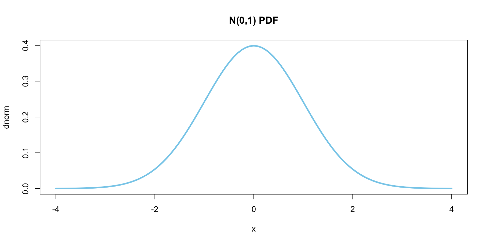
plot() 函数的强大之处
输入不同对象，它就能智能选择最合适的图形。
2小时R入门 | © 2026 顶刊研习社, Li Zongzhang